MBLogic
for an open world in automation
MBLogic
for an open world in automation
Program Control Instructions
Program control instructions control the flow of the PLC program.
| Instr. | Descr. | # Param | Subr | DS | KInt | One Shot | Symbol |
|---|---|---|---|---|---|---|---|
| END | Program end | 0 | 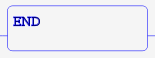 | ||||
| ENDC | Program end conditional | 0 | 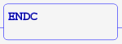 | ||||
| FOR | For/next loop | 1 or 2 | X | X | X | 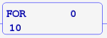 | |
| NEXT | Next in For/next loop | 0 |  |
||||
| SBR | Define a subroutine | 1 | X | 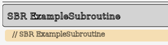 | |||
| CALL | Call subroutine | 1 | X | 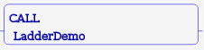 | |||
| RT | Return from subroutine | 0 | 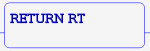 | ||||
| RTC | Return from subroutine conditional | 0 | 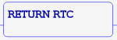 |
Program END
END and ENDC will terminate a program scan. END terminates the scan unconditionally, while ENDC will terminate the scan if the logic stack is true.
Example:
// END. NETWORK 100 STR SC1 AND X5 ENDC STRN SC1 END
Subroutines
SBR, CALL, RT, and RTC are subroutine instructions. SBR is used to define a subroutine. CALL will call a subroutine. SBR and CALL expect a valid subroutine name as a parameter. RT will return from a subroutine unconditionally. RTC will return from a subroutine if the logic stack is true.
Example:
// Subroutines. NETWORK 1 STR SC1 OUT Y1 CALL SubTest NETWORK 2 STR C47 OUT Y19 END // Define subroutine. SBR SubTest NETWORK 1 STR SC1 RST Y10 AND X21 RTC SET C47 RT
For/Next
FOR and NEXT are used to define a loop which executes a specified number of times. FOR begins the loop, and NEXT defines the end of the loop. FOR expects an integer parameter specifying the number of loops to perform. This may be a register or constant. FOR also accepts an optional parameter specifying whether the instruction should execute as a one-shot. FOR/NEXT loops may be nested.
Example:
// FOR/NEXT with constant. NETWORK 1 STR SC1 FOR 10 OUT Y1 NEXT // FOR/NEXT with register. NETWORK 2 STR SC1 FOR DS1 OUT Y2 NEXT // FOR/NEXT with one-shot. NETWORK 2 STR SC1 AND C1 FOR 100 1 OUT Y2 NEXT
Errors
Using RT or RTC in the main program will cause a run-time error. Using NEXT without FOR may cause a run-time error. Using FOR without NEXT may cause unpredictable run-time operation.
Subroutines may call other subroutines, and they may even call themselves (recursion is permitted). However, if if the nesting level reaches an excessive level, a run time error will occur and the program will exit. The maximum nesting level is undefined, but is typically about 1000.
Ladder Examples
The following shows examples in ladder format. Each example shows the IL code as comments, followed by the ladder equivalent.
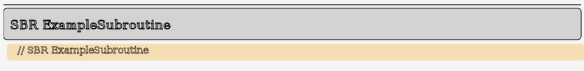 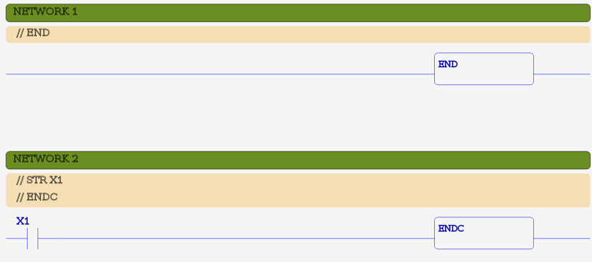 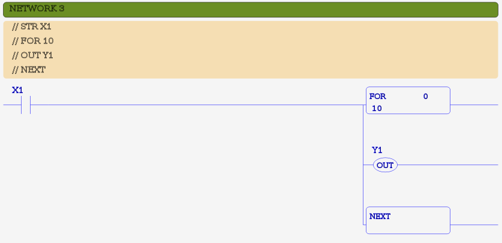 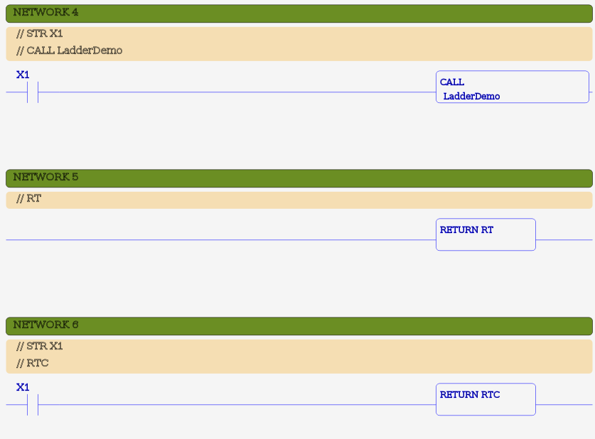